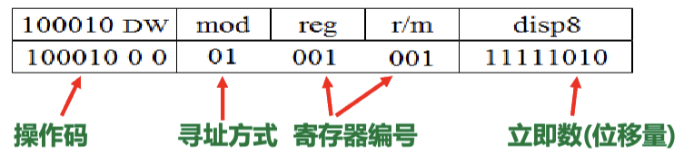
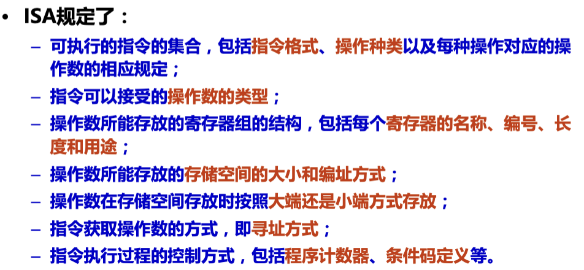
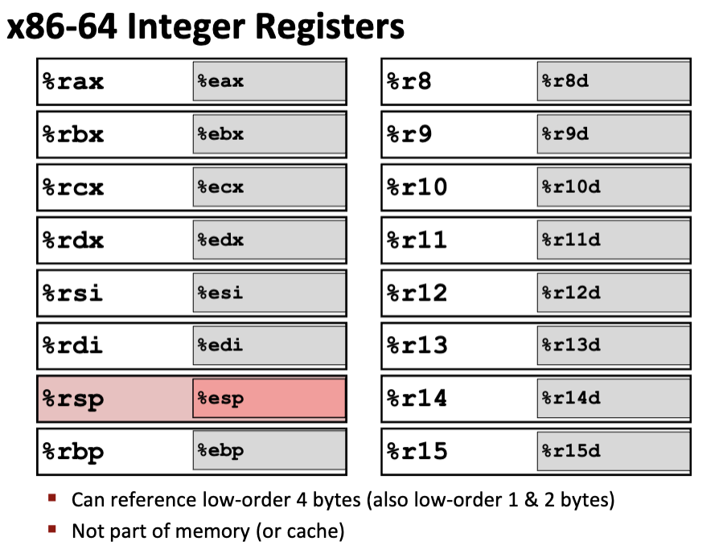
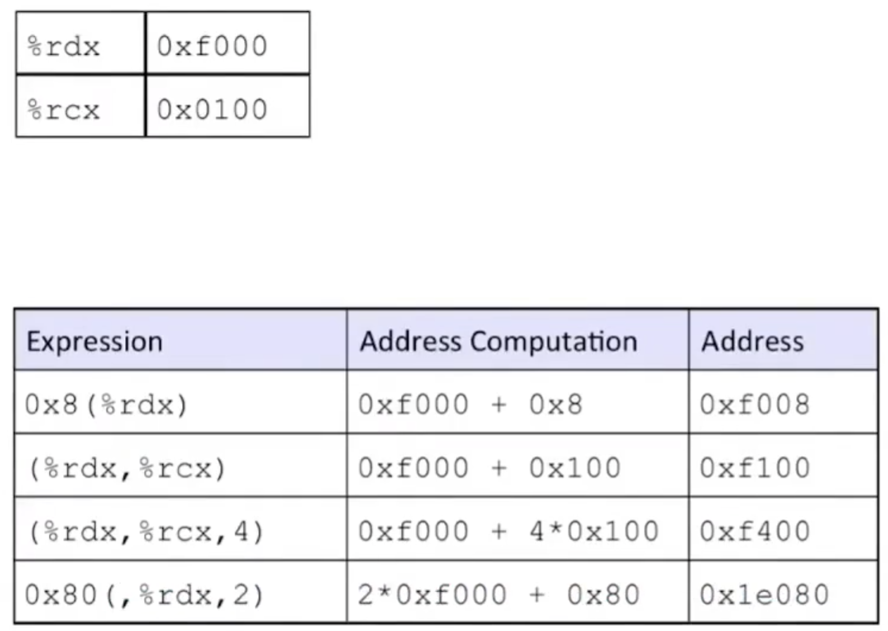
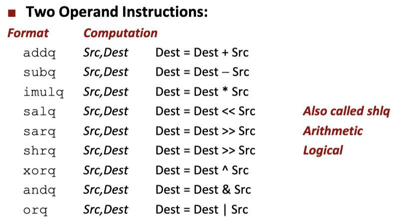
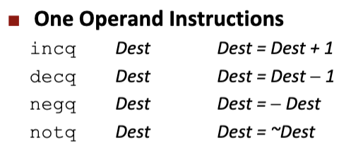
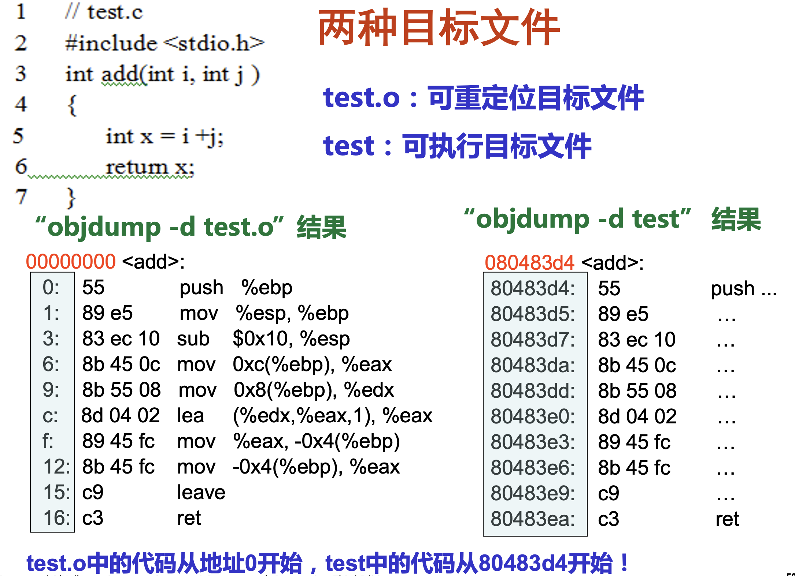

指令的概念
- 微指令是微程序级命令，属于硬件范畴
- 伪指令是由若干机器指令组成的指令序列，属于软件范畴
- 机器指令介于二者之间，处于硬件和软件的交界面，本章中提及的指令都指机器指令；
- 汇编指令是机器指令的汇编表示形式，即符号表示
- 机器指令（二进制串）和汇编指令一一对应，它们都与具体机器结构有关，都属于机器级指令；
- 编译Compiling：
gcc -Og -S test.c，-Og为优化选项，得到汇编代码test.s；
机器代码的组成
- 操作性质（操作码）、源操作数、目的操作数地址（立即数，寄存器编号，存储地址）；
 - 通常由以下三部分组成：
- 程序计数器PC(Program
Counter)：即
%rip(x86-64)，指向当前正在执行指令的下一条指令的地址； - 整数寄存器Register file：分别存储了64位的值（地址，整数数据）；
- 状态寄存器Condition codes：最近执行的算术或逻辑指令的状态信息；
- 程序计数器PC(Program
Counter)：即
- 注意机器代码不区分无符号整数和有符号整数，不区分函数和指针；
ISA指令集体系结构

信息访问（保护模式下）
- 整数寄存器：
%rax，函数返回值；%rdi，函数调用的第一个参数；%rsi，函数调用的第二个参数；%rdx，函数调用的第三个参数；%rcx，函数调用的第四个参数；%r8，函数调用的第五个参数；%r9，函数调用的第六个参数（超过6个参数放在栈空间中）；%rsp，栈顶指针；
- 操作数指示符号
- 寄存器：直接调用即可；
- 立即数：
$ + 整数表示； - 内存引用：
(%rax) - 基址、比例变址、位移操作：
D(Rb, Ri, S)，表示获取Rb + S * Ri + D地址上的数，Rb为段基址，Ri为有效地址(不能是%rsp)，S为比例因子(1、2、4、8)，D为偏移量；即算的时候是直接拿寄存器做运算得到地址，但最终的结果应该是该地址上的数；
- 传送指令：
- mov：
movq src, dest；- 立即数可以移动到寄存器或内存地址(寄存器的内容，即此时立即数存在内存中，寄存器存的是指向该内存的地址)；
movq $0x4, %rax\(\Leftrightarrow\)temp = 0x4；movq $-147, (%rax)\(\Leftrightarrow\)*p = -147；
- 寄存器可以移动到寄存器或内存地址；
- 内存只能移动到寄存器，内存之间不能移动；
movl指令以寄存器为目的是，不但会更新低32位的值，还会将高位4字节都设置为0；movs符号扩展；movz零扩展；
- 立即数可以移动到寄存器或内存地址(寄存器的内容，即此时立即数存在内存中，寄存器存的是指向该内存的地址)；
- lea：加载有效地址，
leaq (%rdi, %rdi, 2), %rax；- 注意与
mov区别，lea虽然加了括号，但实际上取的是内存的地址，且结果也是内存的地址，而非地址的指向，所以上面那句指令等价于t = x + x * 2；
- 注意与
- mov：
- 二元运算指令：
- 注意
sarq为算术右移，shrq为逻辑右移； - 除了乘除，都不区分有符号和无符号；
- 加减影响所有标志；
- 递增递减影响除进位借位CF以外的标志；
- 取负NEG影响标志：对0取负得到0，CF = 0；其余情况CF = 1；
- 比较运算：做减法得到标志，不会改变寄存器的值；
- 注意
- 一元运算指令：
- 逻辑运算中，
not不会影响标志，其余OF = CF = 0，ZF和SF根据结果设置； test做“与”操作，但不会改变寄存器的值，仅影响标志位；
- 逻辑运算中，
GCC的使用举例
gcc -Og -S test.c得到汇编代码test.s；gcc -O1 test.c -o test得到可执行文件test；objdump -d test.o > test.txt得到反汇编代码；- 注意可重定位目标文件和可执行目标文件的差异，可重定位目标文件还没有经过链接器链接：